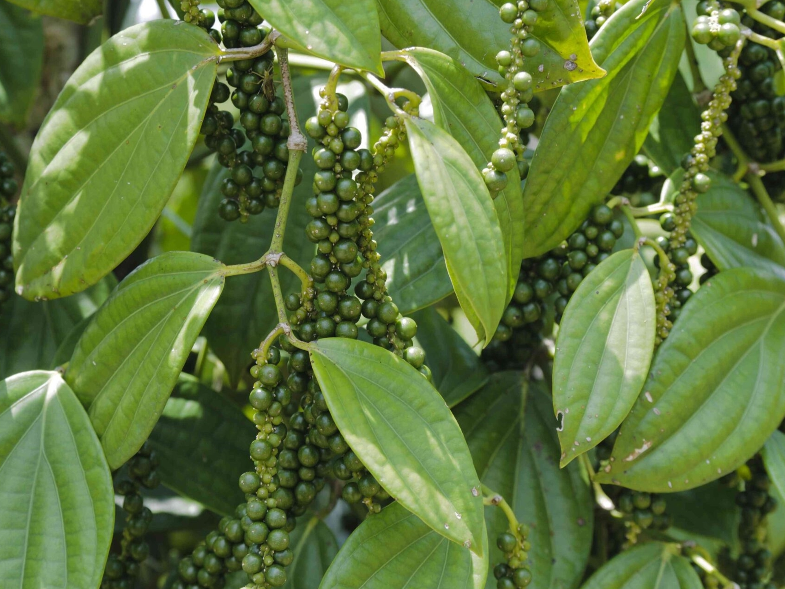

----- Nội dung -----
CAO SU
TIÊU
ĐIỀU

VỀ CUỘC SỐNG
Bên trên là thứ gắn liền với một người con Bình Phước chính hiệu. Mà có nhà trồng điều có nhà trồng tiêu có nhà trồng cao su, chứ không
phải nhà nào cũng có 3 cây này, tùy vùng nữa.
Về con người, vì đây là vùng đất mới
khai hoang, nên dân đa số nhập cư, nếu ở Đà Lạt, Đắc Lắc thường là dân từ miền Bắc vào,
còn ở đây, người gốc miền Trung nhiều hơn thì phải.
Khí hậu ở đây thuận lợi, không thiên tai cũng không thiếu tài nguyên.
Vì đất rộng, không có biển, các khu du lịch không tập trung nên ít thu hút mọi người đến thăm.
Nhưng là một nơi đáng sống bởi vì các lí do sau:
1 là đường xá rất chi là thoải mái.
2 là lối sống pha trộn giữa người miền nam và chút của miền Trung + Bắc.
3 là hiện nay đang có nhiều khu công nghiệp đang phát triển.